|
Boss Rush
เมื่อเล่นจบ 1 ครั้งจะสามารถเล่นโหมด Boss Rush ได้
โดยจะเลือกใช้ตัวละครจาก Save ที่เลือก
คือ สามารถใช้ได้ทั้ง Soma และ Julius มาเล่นได้
Soma
Soma จะมี Level เพียง 40 เท่านั้น ไม่ว่าจะเลือก Save ที่มี Level มากเพียงใด
มีค่า Status ดังนี้
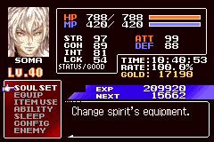
ส่วนอุปกรณ์ต่างๆ ไม่ว่าจะเป็นอาวุธหรือเครื่องป้องกัน รวมทั้ง Soul จะมีให้อย่างครบถ้วน
แต่ Item จะมีให้จำกัด เพียงไม่กี่ชิ้นเท่านั้น ดังนี้
Meat Strip
Restores 29 HP
Tasty Meat
Restores 290 HP
Mind Up
Restores 20% of your MP
High Mind Up
Restores 50% of your MP
Rotten Meat
A slab of rotting beef
เนื้อเน่า ลด HP 200
Spoiled Milk
It expired three years ago
นมหมดอายุไปแล้ว 3 ปี ลด HP 800
* Note : พวก Item ลด HP จะเอาไปทำไม ?
เอาไปใช้กับ Trick โซล Lubicant หาก HP ยิ่งน้อย ยิ่งโจมตีได้รุนแรง
Soul
Soul ที่จำเป็นของ Soma สำหรับการเล่น Boss Rush ให้ได้เวลาดี มีดังนี้
Soul สีแดง : (60) Lightning Doll ปล่อยสายฟ้า (46 MP) รุนแรงพอประมาณ แต่โจมตีถี่
Soul สีแดง : (89) Red Minotaur แกว่งขวานขนาดยักษ์ (150 MP) รุนแรงมาก กวาดทั้งหน้าจอ
Soul สีฟ้า : Black Panther ไว้สำหรับพุ่งตัว (2 MP ต่อวินาที) เพื่อความรวดเร็วในการเล่น
Soul สีฟ้า : (58) Medusa Head ทำให้หยุดกลางอากาศได้ (10 MP ต่อวินาที)
สำหรับปราบ Balore
Soul สีเหลือง : (100) Lubicant ทำให้พลังโจมตีเพิ่มขึ้นตาม HP ที่ลดลงไป
ยิ่ง HP น้อย ยิ่งโจมตีแรง
* Note : ตัวเลขด้านหน้าในวงเล็บ คือหมายเลขของศัตรูในหน้าจอ Enemy
Data
Creaking Skull
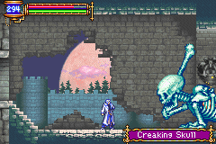
HP 240
Tolerance: Dark
Weakness: Light
* Note : ธรรมดา รีบฆ่า รีบผ่าน
Manticore

HP 440
Weakness: Weapon, Animal, Rock
* Note : เหมือนเดิม ธรรมดา รีบฆ่า รีบผ่าน
Great Armor
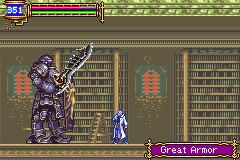
HP 650
Weakness: Lightning
* Note : ใช้โซล Lightning Doll จะช่วยได้มาก ประมาณ 3 ครั้ง ก็ตาย
Man Eater
HP 666
Weakness: Weapon
* Note : Man Eater ไม่ใช่ Boss ในเกม แต่ไม่ทราบเหตุผลว่าทำไมมาอยู่ใน
Boss Rush ได้
ใช้โซล Red Minotaur แกว่งขวานทีเดียวก็จอด
Big Golem
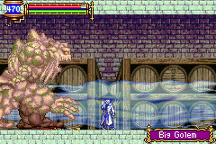
HP 1,200
* Note : โจมตีใส่บริเวณขา ระวังหากโจมตีโดนมือ HP จะไม่ลด
Headhunter
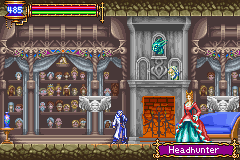
(Headhunter ทั้ง 3 ร่าง)
HP 700
Tolerance: Dark
Weakness: Weapon
* Note : มันจะมี 3 ร่าง, สองร่างแรกโจมตีธรรมดา
ร่างที่ 3 ใช้โซล Red Minotaur แกว่งขวาน ตามด้วยฟัน 2-3 ครั้งก็ผ่าน
Death
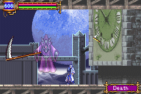
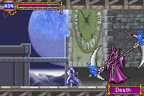
HP 4,444
Tolerance: Dark
* Note : Death จะมี 2 ร่าง
ร่างแรกเป็นเคียว โจมตีแบบธรรมดา หรือใช้โซล Lightning Doll ก็ได้
ร่างที่สอง ใช้โซล Red Minotaur แกว่งขวาน ตามด้วยฟัน 2-3 ครั้งก็ผ่าน
Legion
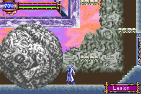
HP 5,000
Tolerance: Dark
Weakness: Light
* Note : ต้องโจมตีเปลือกนอกของ Legion ให้หลุดก่อน จึงจะทำลายแกนกลางได้
ใช้โซล Lightning Doll กระหน่ำยิง หาก MP หมด ให้ใช้ High Mind Up เติม MP
อีก 50%
เปลือกนอกของ Legion มี 4 ส่วน ไม่จำเป็นต้องทำลายทั้งหมด
ทำลายเพียงส่วนใดส่วนหนึ่งก็พอ เพื่อให้สามารถทำลายแกนกลางได้
* Note : ในโหมดปรกติ หากไม่ทำลายเปลือกนอกของ Legion ทั้งหมด จะไม่ได้โซลของมัน
ดังนั้น จำเป็นต้องทำลายเปลือกนอกของมันทั้ง 4 ส่วน จึงจะได้รับโซลของมัน
Balore
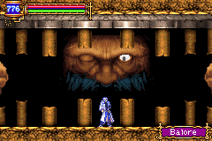
HP 4,000
* Note : Balore จะเปิดตาทีละข้าง
ตาซ้ายให้ใช้โซล Lightning กระหน่ำยิง
ตาขวาใช้โซล Medusa Head (สีฟ้า) ทำให้หยุดกลางอากาศได้ แล้วกระหน่ำฟันลงไป
Graham
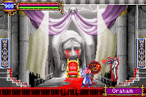
(Graham มี 2 ร่าง)
HP 5,000
Tolerence: Poison, Animal, Rock
* Note : Graham จะมี 2 ร่าง
ร่างแรกโจมตีธรรมดา หรือใช้ Lightning Doll กระหน่ำยิงพอประมาณ (เก็บ MP
ไว้ด้วย)
ร่างที่สอง ใช้โซล Red Minotaur แกว่งขวาน 2 ครั้งก็ผ่าน
หาก MP หมด ให้ใช้ Item Mind Up เติม MP อีก 20%
Reward
เมื่อเล่น Boss Rush จบ จะมีการบันทึกเวลาไว้
และจะมีรางวัลให้ด้วย ซึ่งรางวัลปรกติจะเป็น Potion
แต่หากทำเวลาได้ดี ของรางวัลก็จะดีขึ้นตามไปด้วย
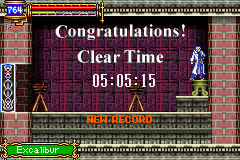
(รางวัลทั้ง 3 อย่าง)
เล่นจบภายในเวลาไม่เกิน 6 นาที จะได้ดาบ Excaliber
เล่นจบภายในเวลาไม่เกิน 5 นาที จะได้ปืน Positron Rifle
เล่นจบภายในเวลาไม่เกิน 4 นาที จะได้ดาบ Valmanway
Real
Boss
เมื่อ Soma รู้ตัวว่าเขาเป็น Dracual จึงพยายามหยุดยั้ง
ด้วยการไปทำลาย Chaos แต่เขาก็ถูก Julius ขัดขวาง
Belmont
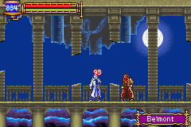
HP 6,000
Tolerence: Light, Poison, Animal, Rock
Chaos
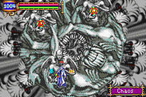
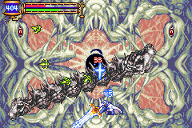
HP : ????
Info : ????
Chaos มี 2 ร่าง
ร่างแรก มันจะดูดโซลทั้งหมดของ Soma ไป ทำให้ไม่สามารถใช้โซลได้
เมื่อทำลายมันได้ ก็จะได้รับโซลคืนมา
ร่างที่สอง หมอบอยู่ตามภาพจะปลอดภัย และให้โจมตีไปเรื่อยๆ ก็จะชนะง่ายๆ
|